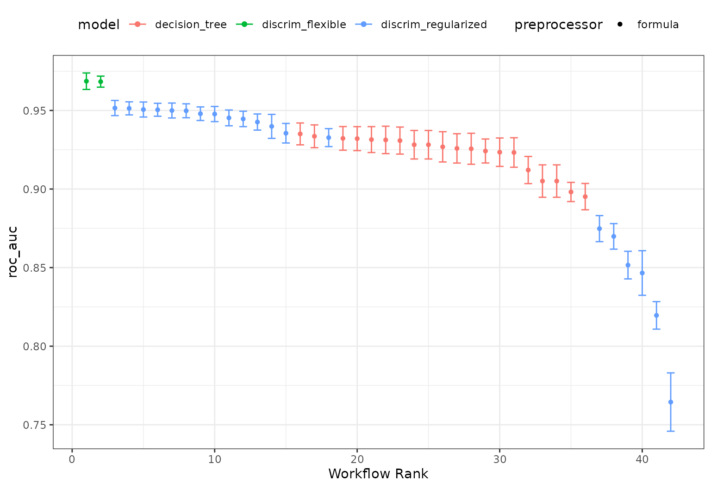
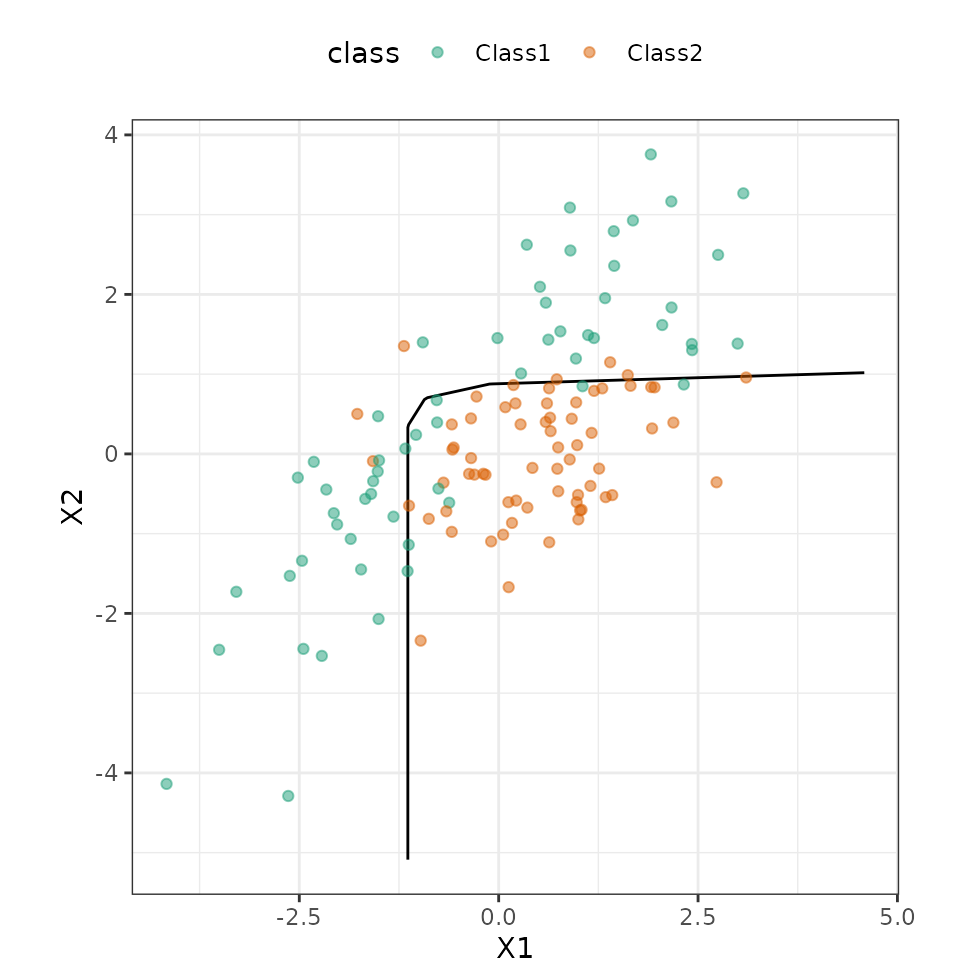

Tuning and Comparing Models
Source:vignettes/articles/tuning-and-comparing-models.Rmd
tuning-and-comparing-models.RmdWorkflow sets are collections of tidymodels workflow objects that are created as a set. A workflow object is a combination of a preprocessor (e.g. a formula or recipe) and a parsnip model specification.
For some problems, users might want to try different combinations of preprocessing options, models, and/or predictor sets. In stead of creating a large number of individual objects, a cohort of workflows can be created simultaneously.
In this example we’ll use a small, two-dimensional data set for illustrating classification models. The data are in the modeldata package:
library(tidymodels)
data(parabolic)
str(parabolic)
#> tibble [500 × 3] (S3: tbl_df/tbl/data.frame)
#> $ X1 : num [1:500] 3.29 1.47 1.66 1.6 2.17 ...
#> $ X2 : num [1:500] 1.661 0.414 0.791 0.276 3.166 ...
#> $ class: Factor w/ 2 levels "Class1","Class2": 1 2 2 2 1 1 2 1 2 1 ...Let’s hold back 25% of the data for a test set:
set.seed(1)
split <- initial_split(parabolic)
train_set <- training(split)
test_set <- testing(split)Visually, we can see that the predictors a mildly correlated and some time of nonlinear class boundary is probably needed.
ggplot(train_set, aes(x = X1, y = X2, col = class)) +
geom_point(alpha = 0.5) +
coord_fixed(ratio = 1) +
scale_color_brewer(palette = "Dark2") We’ll fit two types of discriminant analysis (DA) models (regularized DA and flexible DA using multivariate adaptive regression splines (MARS)) as well as a simple classification tree. Let’s create those
We’ll fit two types of discriminant analysis (DA) models (regularized DA and flexible DA using multivariate adaptive regression splines (MARS)) as well as a simple classification tree. Let’s create those parsnip model objects:
library(discrim)
mars_disc_spec <-
discrim_flexible(prod_degree = tune()) %>%
set_engine("earth")
reg_disc_sepc <-
discrim_regularized(frac_common_cov = tune(), frac_identity = tune()) %>%
set_engine("klaR")
cart_spec <-
decision_tree(cost_complexity = tune(), min_n = tune()) %>%
set_engine("rpart") %>%
set_mode("classification")Next, we’ll need a resampling method. Let’s use the bootstrap
set.seed(2)
train_resamples <- bootstraps(train_set)We have a simple data set so, for a preprocessor, a basic formula will suffice. We could also use a recipe as a preprocessor too.
The workflow set takes a (named) list of preprocessors and a named list of parsnip model specifications and can cross them to make all combinations. For our case, it will just make a set of workflows for our models:
all_workflows <-
workflow_set(
preproc = list("formula" = class ~ .),
models = list(regularized = reg_disc_sepc, mars = mars_disc_spec, cart = cart_spec)
)
all_workflows
#> # A workflow set/tibble: 3 × 4
#> wflow_id info option result
#> <chr> <list> <list> <list>
#> 1 formula_regularized <tibble [1 × 4]> <opts[0]> <list [0]>
#> 2 formula_mars <tibble [1 × 4]> <opts[0]> <list [0]>
#> 3 formula_cart <tibble [1 × 4]> <opts[0]> <list [0]>Since these models all have tuning parameters, we can apply the workflow_map() function to execute grid search for each of these models with a common set of arguments. The default function to apply across the workflows is tune_grid() but other tune_*() functions can be used by passing the function name as the first argument.
Let’s use the same grid size for each model. For the MARS model, there are only two possible tuning parameter values nut tune_grid() is forgiving about our request of 20 parameter values.
The verbose option provides a concise listing for which workflow is being processed:
all_workflows <-
all_workflows %>%
workflow_map(resamples = train_resamples, grid = 20, verbose = TRUE)
#> i 1 of 3 tuning: formula_regularized
#> ✔ 1 of 3 tuning: formula_regularized (3m 0.1s)
#> i 2 of 3 tuning: formula_mars
#> ✔ 2 of 3 tuning: formula_mars (18.4s)
#> i 3 of 3 tuning: formula_cart
#> ✔ 3 of 3 tuning: formula_cart (2m 50.2s)
all_workflows
#> # A workflow set/tibble: 3 × 4
#> wflow_id info option result
#> <chr> <list> <list> <list>
#> 1 formula_regularized <tibble [1 × 4]> <opts[2]> <tune[+]>
#> 2 formula_mars <tibble [1 × 4]> <opts[2]> <tune[+]>
#> 3 formula_cart <tibble [1 × 4]> <opts[2]> <tune[+]>The result column now has the results of each tune_grid() call.
From these results, we can get quick assessments of how well these models classified the data:
rank_results(all_workflows, rank_metric = "roc_auc")
#> # A tibble: 84 × 9
#> wflow_id .config .metric mean std_err n preprocessor model rank
#> <chr> <chr> <chr> <dbl> <dbl> <int> <chr> <chr> <int>
#> 1 formula_ma… Preproces… accura… 0.911 0.00407 25 formula discri… 1
#> 2 formula_ma… Preproces… roc_auc 0.969 0.00319 25 formula discri… 1
#> 3 formula_ma… Preproces… accura… 0.904 0.00388 25 formula discri… 2
#> 4 formula_ma… Preproces… roc_auc 0.968 0.00213 25 formula discri… 2
#> 5 formula_re… Preproces… accura… 0.872 0.00547 25 formula discri… 3
#> 6 formula_re… Preproces… roc_auc 0.952 0.00293 25 formula discri… 3
#> 7 formula_re… Preproces… accura… 0.858 0.00564 25 formula discri… 4
#> 8 formula_re… Preproces… roc_auc 0.951 0.00253 25 formula discri… 4
#> 9 formula_re… Preproces… accura… 0.837 0.00712 25 formula discri… 5
#> 10 formula_re… Preproces… roc_auc 0.951 0.00290 25 formula discri… 5
#> # … with 74 more rows
# or a handy plot:
autoplot(all_workflows, metric = "roc_auc")
It looks like the MARS model did well. We can plot its results and also pull out the tuning object too:
autoplot(all_workflows, metric = "roc_auc", id = "formula_mars")
Not much of a difference in performance; it may be prudent to use the additive model (via prod_degree = 1).
We can also pull out the results of tune_grid() for this model:
mars_results <-
all_workflows %>%
extract_workflow_set_result("formula_mars")
mars_results
#> # Tuning results
#> # Bootstrap sampling
#> # A tibble: 25 × 4
#> splits id .metrics .notes
#> <list> <chr> <list> <list>
#> 1 <split [375/134]> Bootstrap01 <tibble [4 × 5]> <tibble [0 × 1]>
#> 2 <split [375/132]> Bootstrap02 <tibble [4 × 5]> <tibble [0 × 1]>
#> 3 <split [375/142]> Bootstrap03 <tibble [4 × 5]> <tibble [0 × 1]>
#> 4 <split [375/146]> Bootstrap04 <tibble [4 × 5]> <tibble [0 × 1]>
#> 5 <split [375/135]> Bootstrap05 <tibble [4 × 5]> <tibble [0 × 1]>
#> 6 <split [375/131]> Bootstrap06 <tibble [4 × 5]> <tibble [0 × 1]>
#> 7 <split [375/139]> Bootstrap07 <tibble [4 × 5]> <tibble [0 × 1]>
#> 8 <split [375/136]> Bootstrap08 <tibble [4 × 5]> <tibble [0 × 1]>
#> 9 <split [375/137]> Bootstrap09 <tibble [4 × 5]> <tibble [0 × 1]>
#> 10 <split [375/139]> Bootstrap10 <tibble [4 × 5]> <tibble [0 × 1]>
#> # … with 15 more rowsLet’s get that workflow object and finalize the model:
mars_workflow <-
all_workflows %>%
extract_workflow("formula_mars")
mars_workflow
#> ══ Workflow ════════════════════════════════════════════════════════════════════
#> Preprocessor: Formula
#> Model: discrim_flexible()
#>
#> ── Preprocessor ────────────────────────────────────────────────────────────────
#> class ~ .
#>
#> ── Model ───────────────────────────────────────────────────────────────────────
#> Flexible Discriminant Model Specification (classification)
#>
#> Main Arguments:
#> prod_degree = tune()
#>
#> Computational engine: earth
mars_workflow_fit <-
mars_workflow %>%
finalize_workflow(tibble(prod_degree = 1)) %>%
fit(data = train_set)
mars_workflow_fit
#> ══ Workflow [trained] ══════════════════════════════════════════════════════════
#> Preprocessor: Formula
#> Model: discrim_flexible()
#>
#> ── Preprocessor ────────────────────────────────────────────────────────────────
#> class ~ .
#>
#> ── Model ───────────────────────────────────────────────────────────────────────
#> Call:
#> mda::fda(formula = ..y ~ ., data = data, method = earth::earth,
#> degree = ~1)
#>
#> Dimension: 1
#>
#> Percent Between-Group Variance Explained:
#> v1
#> 100
#>
#> Training Misclassification Error: 0.08533 ( N = 375 )Let’s see how well these data work on the test set:
# Make a grid to predict the whole space:
grid <-
crossing(X1 = seq(min(train_set$X1), max(train_set$X1), length.out = 250),
X2 = seq(min(train_set$X1), max(train_set$X2), length.out = 250))
grid <-
grid %>%
bind_cols(predict(mars_workflow_fit, grid, type = "prob"))We can produce a contour plot for the class boundary then overlay the data:
ggplot(grid, aes(x = X1, y = X2)) +
geom_contour(aes(z = .pred_Class2), breaks = 0.5, col = "black") +
geom_point(data = test_set, aes(col = class), alpha = 0.5) +
coord_fixed(ratio = 1)+
scale_color_brewer(palette = "Dark2")
The workflow set allows us to screen many models to find one that does very well. This can be combined with parallel processing and, especially, racing methods from the finetune package to optimize the efficiency.